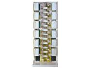

Fiber Optic Distribution Frame GPX910-Z Series

Features
* Rotatable 72-ports distribution unit box at patch cord side
* Rotatable 96-ports distribution unit box at facility side
* Sheet metal shelves, operation on both sides with stereoscopic management for patch cords
* Management for pigtails and patch cords is separated with no interference and intersection
* Sliding adaptor trestle
* Multiple frames can be merged
NO. |
|
Type |
Dimension (mm) H*W*D |
Max Capacity (Fiber count) |
|
Patch chord side |
Facility side |
||||
1 |
|
GPX910-Z1a |
2600x840x600 |
1008 |
672 |
2 |
|
GPX910-Z2a |
2200x840x600 |
864 |
576 |